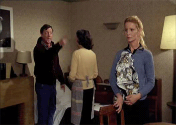
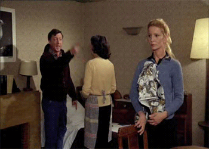
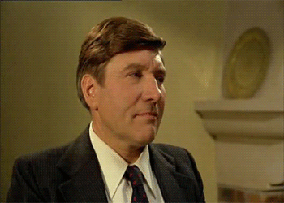
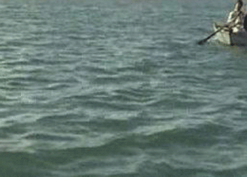
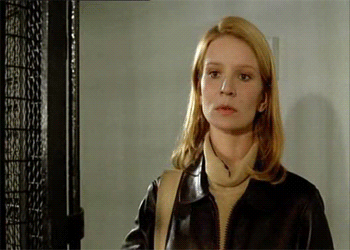
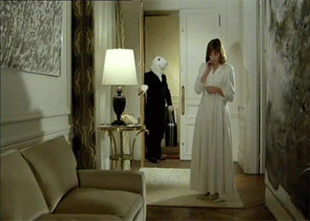
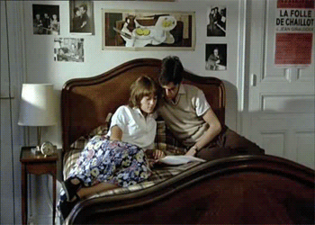
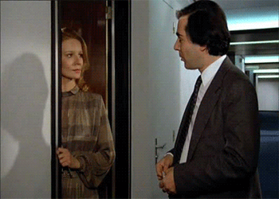
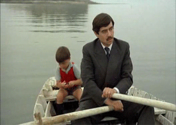
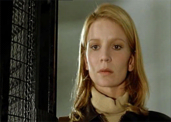

on ne peux pas recopier le hasard parfaitement
la réalité y fait souvent des plis
c'est super-dur à aplatir
sans y mettre de la modération
encaisser à qui-mieux-mieux
avant - tant qu'il en reste
argumenter - attention - mentir
sans se justifier, en douceur
en aspirant bien, on arrive à tout enlever
après, même les petits morceaux